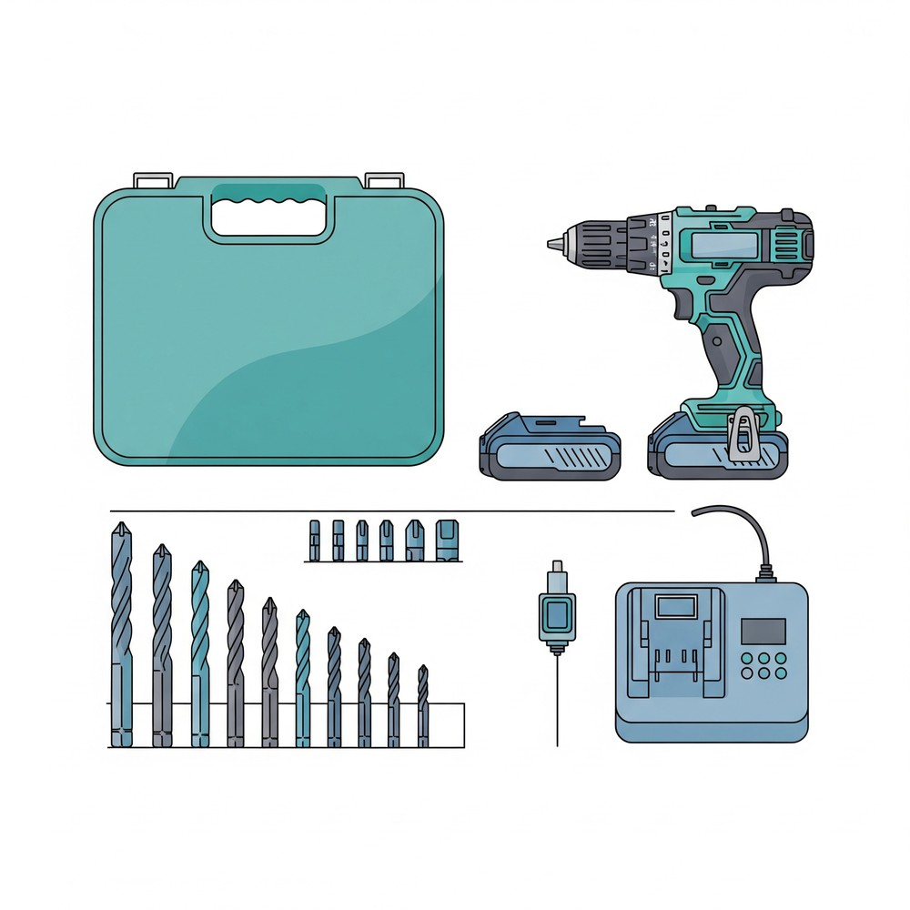
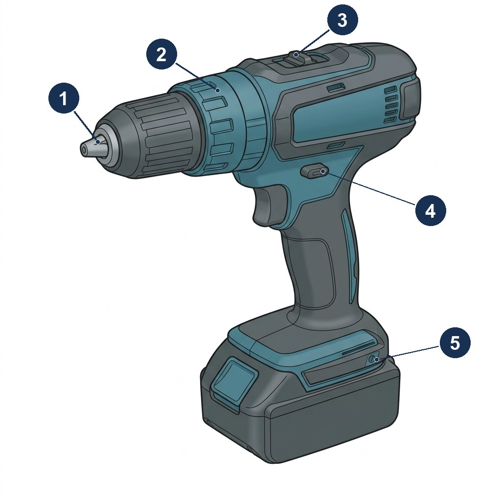
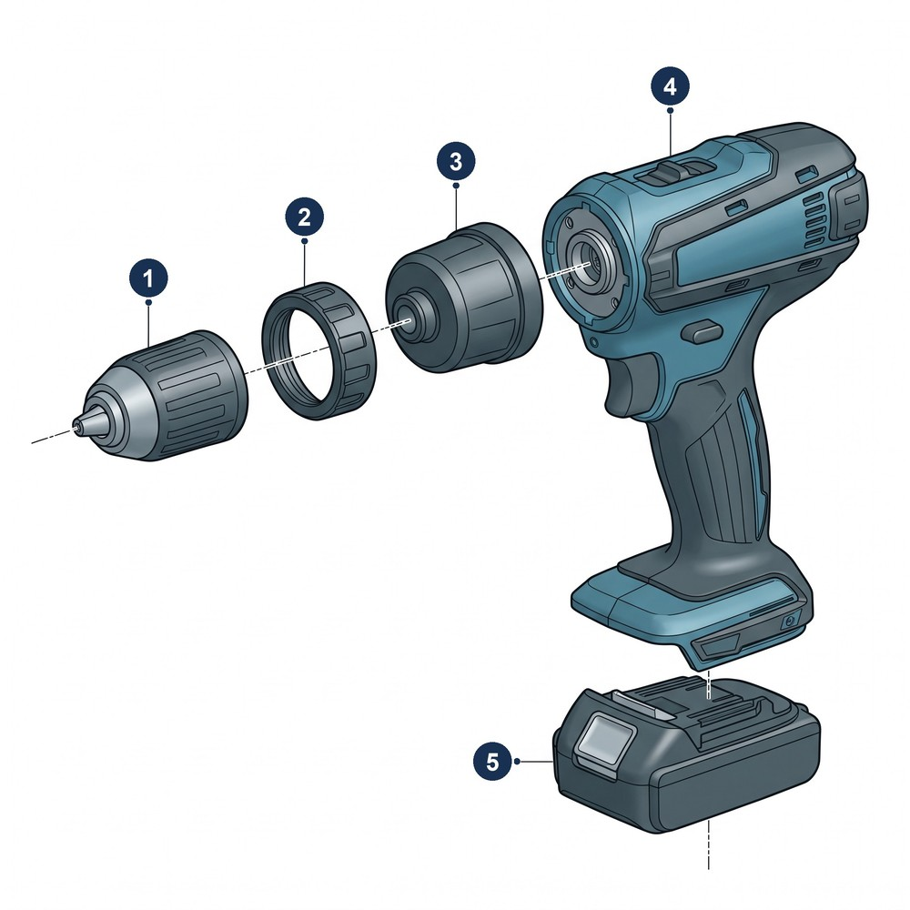
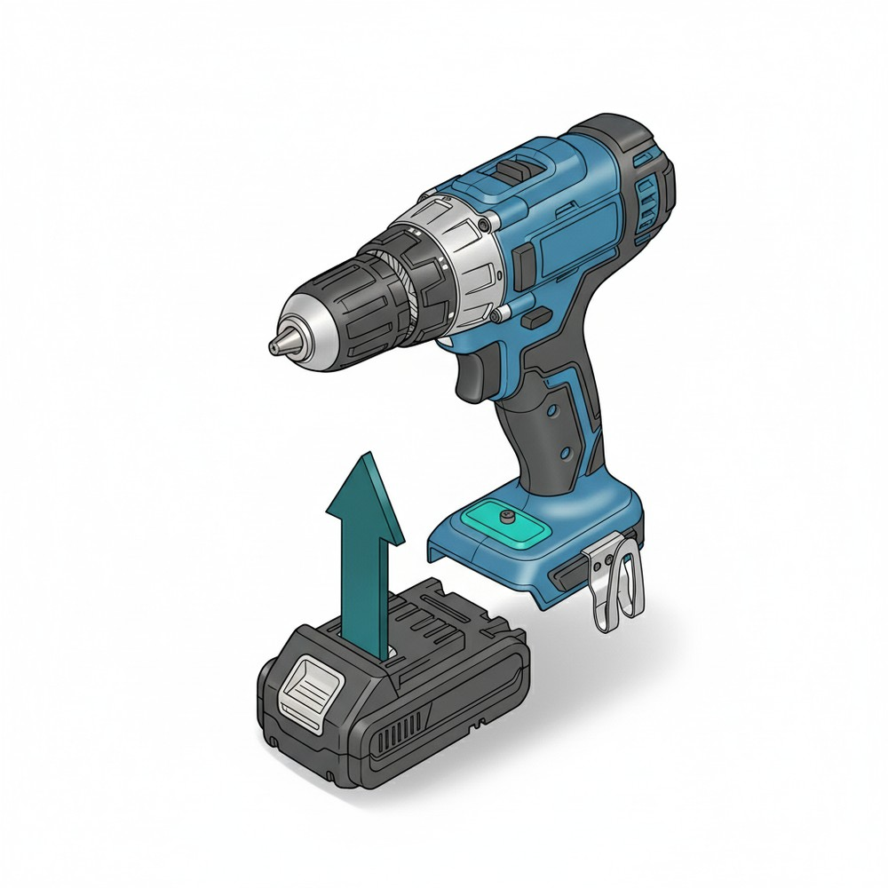
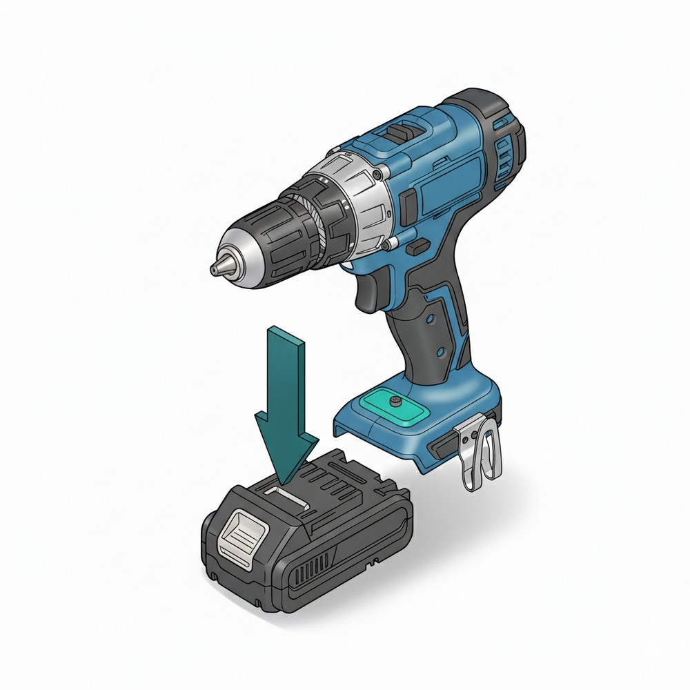
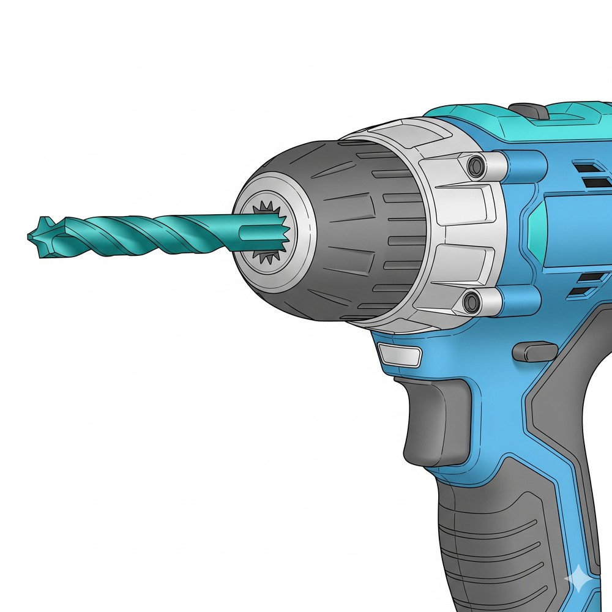
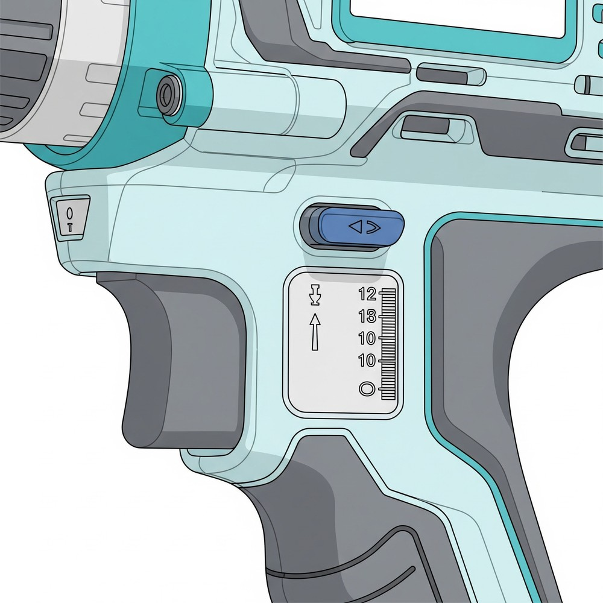
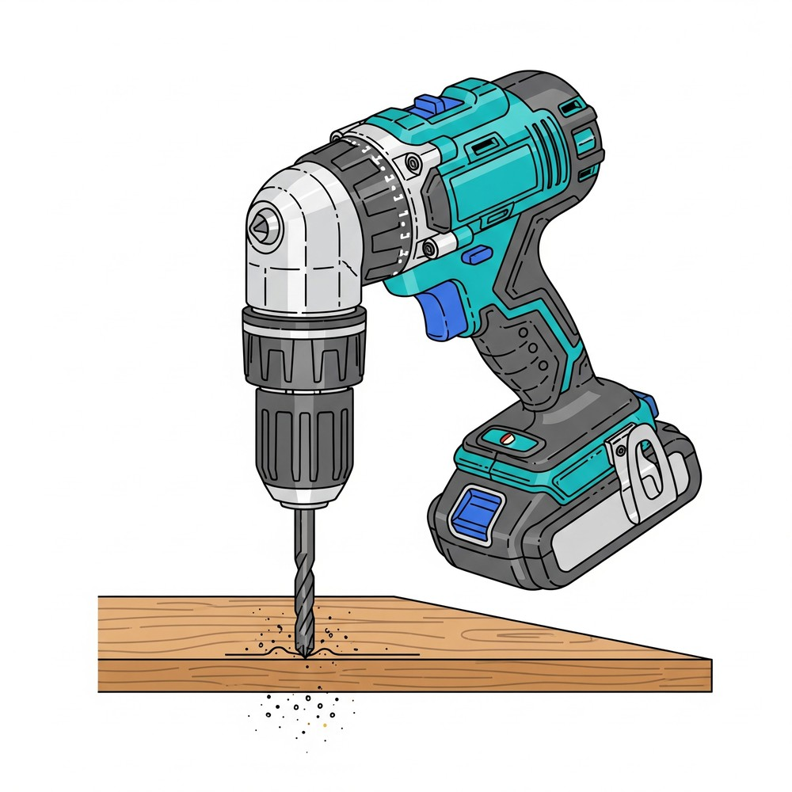
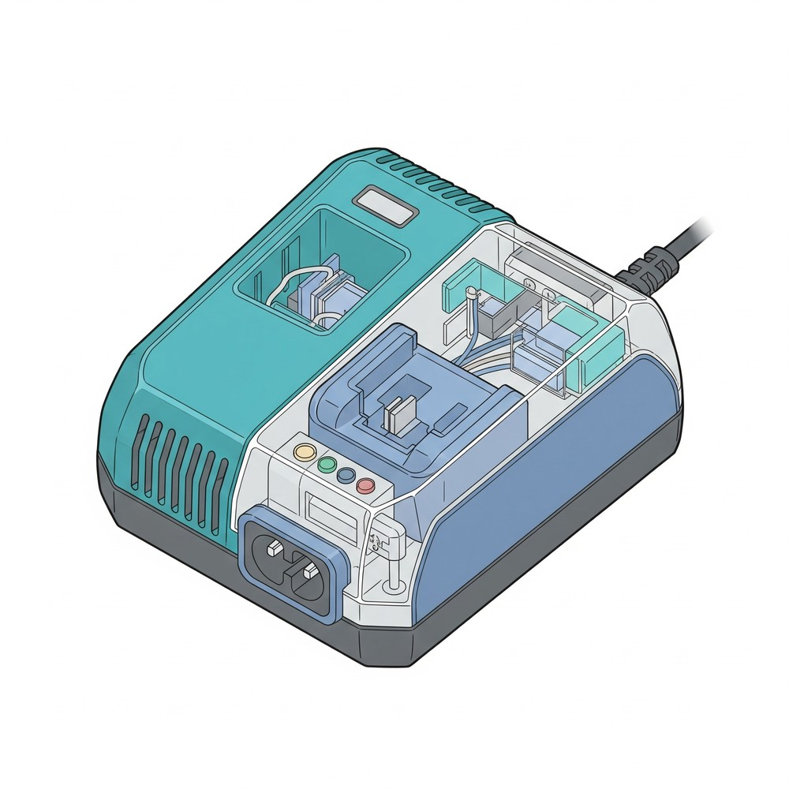
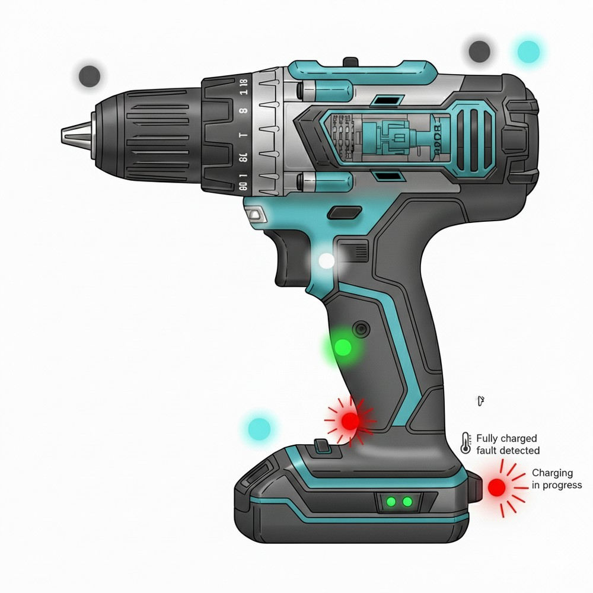

This manual explains safe use, setup, operation, maintenance, and troubleshooting for the Spinomatic X7 cordless drill (TorqueWorks Ltd.).
1. Safety Information
|
Power tools can cause serious injury if used improperly. Read and keep this manual. Do not allow children to operate the drill. |
1.1. General Safety
-
Wear PPE: safety goggles and hearing protection. If you wear gloves, use close-fitting gloves only; loose gloves can catch in the rotating chuck.
-
Keep work area clean, dry, and well lit. Do not operate near flammable vapors.
-
Maintain stable footing and balance at all times.
-
Secure the workpiece (vise or clamps); never hold material in your hand.
-
Do not modify the tool. Use only accessories rated for the drill.
1.2. Electrical & Battery Safety
-
Use only charger CHG-18V and battery BAT-18V (or approved equivalents).
-
Do not short-circuit, crush, heat above 60 °C, or incinerate battery packs.
-
Charge only indoors, between 5 °C and 35 °C. Unplug the charger when not in use.
-
Inspect battery and charger before each use; replace if cracked, deformed, or leaking.
|
Temperature Monitoring: If battery becomes hot during use (too hot to hold comfortably), stop work immediately and allow cooling for 15 minutes minimum. Continued use of overheated batteries can cause permanent damage or fire risk. |
1.3. Operation Safety
-
Remove adjusting keys and wrenches before powering on.
-
Select the correct speed/torque and bit for the material before contact.
-
Keep hands, hair, and clothing away from rotating parts.
-
If the tool smokes, vibrates excessively, or overheats, stop and investigate.
1.4. After Use
-
Turn off and remove the battery before changing bits, adjusting, cleaning, or storage.
-
Allow the tool to cool. Store in a dry location out of children’s reach.
2. Product Overview
The Spinomatic X7 by TorqueWorks Ltd. is a versatile 18 V cordless drill/driver designed for DIY enthusiasts and light professional use.
2.1. Package Contents
-
Drill body (x1)
-
18 V Li-ion battery (x1)
-
Charger (x1)
-
Carry case (x1)

2.2. Parts & Controls

-
Chuck
-
Torque ring
-
Gear selector
-
Trigger & reverse switch
-
Battery release
| Use this diagram to locate controls referenced throughout the manual. |
2.3. Exploded View (reference)

-
Keyless chuck
-
Torque-adjustment ring
-
Gearbox housing
-
Body and handle
-
Battery pack
| For reference only. Do not disassemble the tool; see Tool Maintenance. |
3. Assembly & Setup
3.1. Attaching/Removing the Battery

-
Slide the battery onto the base of the handle from front to back until it clicks.
-
Verify it is seated and cannot pull free.

-
Press the latch.
-
Pull the battery downward to remove.
3.2. Inserting Drill/Driver Bits

-
Remove the battery, or set the direction switch to the center (lock) position.
-
Rotate the chuck sleeve counterclockwise (viewed from the front) to open the jaws.
-
Insert the bit; rotate the sleeve clockwise (viewed from the front) to tighten.
-
Verify the bit is secured.
4. Operating Instructions
4.1. Bit & Material Selection
| Material | Recommended Bit | Notes |
|---|---|---|
Softwood |
Wood twist, brad-point |
Gear 2 (high speed) for small bits. |
Hardwood |
Brad-point |
Pre-drill pilot holes; moderate speed. |
Metal |
HSS twist |
Lubricate; Gear 1, low speed, steady pressure. |
Masonry |
Masonry bit |
Not recommended: the X7 has no hammer mode. Use a hammer drill for masonry and concrete. |
4.2. Speed & Torque

Gear selector (sets the speed range):
-
Gear 1 → High torque / low speed (screws, large bits, metal).
-
Gear 2 → Low torque / high speed (small holes in wood and soft materials).
Torque ring (sets the clutch):
-
Settings 1–20 are for driving screws. The clutch slips (ratchets) when the set torque is reached; low numbers slip early, high numbers slip late.
-
Drill position (drill-bit symbol) locks out the clutch and delivers full torque. Use it for all drilling.
-
For screws, start at a low setting. Increase the setting only if the clutch slips before the screw is seated.
|
Match the speed to the bit and material: small bits in wood cut cleanly at high speed; large bits and metal need low speed. Running a bit faster than its material allows overheats it and dulls the edges. |
4.3. Pilot Holes (Guideline)
| Screw Size | Pilot Diameter |
|---|---|
3 mm (≈#4) |
2.0–2.2 mm |
4 mm (≈#8) |
3.0–3.2 mm |
5 mm (≈#10) |
3.5–4.0 mm |
4.4. Basic Drilling Technique
|
Spinning workpiece hazard. A workpiece that is not clamped can catch on the bit and spin, causing hand and wrist injuries. Secure the workpiece in a vise or with clamps before you start. |

-
Prepare the work area: Clear debris, ensure adequate lighting, and secure the workpiece in a vise or with clamps.
-
Set the tool: Turn the torque ring to the drill position and select the gear for the bit and material.
-
Mark the drilling point: Mark the point with a pencil; use a center punch on metal surfaces to prevent bit wandering.
-
Position the drill: Hold the drill perpendicular to the surface with both hands. Brace your wrist for stability.
-
Start slowly: Squeeze the trigger gently to begin drilling at low speed.
-
Apply steady pressure: Increase speed gradually as needed, maintaining consistent pressure.
-
Before breakthrough: Reduce pressure when nearing the far side to prevent tear-out and splintering.
|
Kickback Prevention: If the bit binds, release the trigger immediately and reverse the drill to back out the bit. Never force the tool or attempt to free a bound bit by increasing pressure. |
4.5. Screw Driving Technique
-
Select correct bit: Ensure the driver bit fully fits the screw head with no gaps.
-
Set appropriate torque: Start with a low torque-ring setting. Increase the setting only if the clutch slips before the screw is seated.
-
Pre-drill pilot holes: Use the pilot hole chart (above) for proper sizing.
-
Drive steadily: Maintain a perpendicular angle and firm, steady pressure so the bit does not cam out.
-
Stop at clutch click: When the clutch engages, the screw is seated.
|
Overtightening screws can strip heads, crack materials, or damage the drill’s clutch mechanism. |
5. Charging & Maintenance
5.1. Charging

-
Place charger on a flat, ventilated surface.
-
Connect charger to mains.
-
Insert the battery pack until it clicks; ensure contacts are clean/dry.
-
When complete, remove the battery and unplug the charger.

| Indicator | Meaning |
|---|---|
Solid red |
Charging in progress |
Solid green |
Fully charged |
Flashing red |
Temperature/fault detected — allow to cool; check contacts and vents |
No light |
No power — check outlet/cable |
|
Charge only between 5 °C and 35 °C. Do not cover the charger; keep vents clear. |
Typical time: ~60–90 min for a 2.0 Ah pack.
5.2. Battery Health
-
Store at ~50% charge if unused for > 1 month.
-
Avoid full discharge; recharge when power drops noticeably.
-
Keep packs dry and away from metal objects; transport with terminal covers.
5.3. Tool Maintenance
-
Inspect chuck jaws and remove debris.
-
Clear dust from the ventilation slots with a dry brush.
-
Tighten exterior screws if loosened by vibration.
-
Do not open the tool body or lubricate internal parts.
5.4. Cleaning
-
Remove the battery before cleaning.
-
Wipe with a dry or slightly damp cloth. Do not use solvents or compressed air; compressed air can drive dust into the bearings and switch.
5.5. Storage
-
Dry, indoor location at 10–25 °C.
-
Remove battery from tool for storage/transport.
5.6. Consumables & Parts
| Item | Example |
|---|---|
Battery pack |
BAT-18V (2.0 Ah / 4.0 Ah) |
Charger |
CHG-18V |
Driver bits |
PH2, PZ2, T20, hex 3–6 mm |
6. Troubleshooting
| Problem | Possible Cause | Corrective Action |
|---|---|---|
Drill does not start when trigger is pulled |
Direction switch in center (lock) position; battery not seated or discharged |
Move the direction switch fully to forward or reverse; remove and reinsert the battery until it clicks; recharge or try a known-good pack. |
Power cuts out intermittently during use |
Dirty battery contacts or debris in trigger |
Remove the battery; clean contacts with a dry cloth; brush debris away from the trigger area with a dry brush. |
Chuck slips and bit spins freely |
Bit not fully seated or jaws dirty |
Reseat bit and tighten; clean jaws; replace worn bits. |
Clutch ratchets before the screw is seated |
Torque-ring setting too low; pilot hole too small |
Increase the torque-ring setting one step at a time; check pilot hole size against the chart. |
Screw head strips or bit cams out |
Wrong driver bit size/profile, worn bit, or too little pressure |
Use the correct, undamaged bit; apply firm, steady pressure in line with the screw; lower the torque-ring setting so the clutch slips before the head strips. |
Drill cuts slowly or stalls frequently |
Torque ring not in drill position, wrong gear, dull bit, or insufficient pressure |
Set the torque ring to the drill position; switch to Gear 1 for more torque; maintain steady pressure; replace bit; for metal, use cutting lubricant and slower speed. |
Overheating / hot housing |
Prolonged heavy load or blocked vents |
Stop and allow to cool; clear ventilation slots; use appropriate speed/bit. |
Unusual vibration/noise |
Bent bit or loose accessory |
Stop immediately; remove battery; replace bit and check accessories are tight. |
6.1. When to Contact Service
-
Housing cracked, burning smell, or visible arcing.
-
Battery leaking, swollen, or excessively hot after cooling.
-
Repeated fault after following the corrective actions above.
7. Technical Specifications
| Parameter | Value |
|---|---|
Voltage |
18 V (Li-ion) |
Battery capacity |
2.0 Ah |
No-load speed |
0–450 / 0–1600 rpm (2-speed) |
Max torque |
45 N·m |
Clutch settings |
20 + drill |
Chuck capacity |
1.5–13 mm |
Charging time |
~60–90 min (2.0 Ah) |
Weight (with battery) |
~1.6 kg |
Operating temperature |
0–40 °C (tool) |
Charging temperature |
5–35 °C (battery/charger) |
Manufacturer |
TorqueWorks Ltd., 221B Tool Street, Inventon, NY 10001 |
8. Warranty & Support
The Spinomatic X7 is warranted against defects for 24 months from the purchase date. Retain proof of purchase.
Manufacturer: TorqueWorks Ltd.
Head Office: 221B Tool Street, Inventon, NY 10001, USA
Phone: +1-800-555-7746
Email (Support): support@torqueworks.example
Email (Info): info@torqueworks.example
Website: www.torqueworks.example
Appendix A: Compliance & Disposal
A.1. Standards Conformity
The Spinomatic X7 drill is designed to conform to UL 62841-1 / IEC 62841-1 (Electric motor-operated hand-held tools — Safety — General requirements) and UL 62841-2-1 / IEC 62841-2-1 (Particular requirements for hand-held drills and impact drills).
A.2. FCC Statement (Charger CHG-18V)
This device complies with Part 15 of the FCC Rules. Operation is subject to the following two conditions: (1) this device may not cause harmful interference, and (2) this device must accept any interference received, including interference that may cause undesired operation. Changes or modifications not expressly approved by TorqueWorks Ltd. could void the user’s authority to operate the equipment.
A.3. Battery Recycling
The BAT-18V pack contains lithium-ion cells.
-
Do not dispose of batteries with household waste.
-
Tape over the terminals, then take the pack to a battery recycling point or a retailer take-back program.
-
Follow local regulations for battery disposal; some jurisdictions prohibit discarding Li-ion batteries in the trash.
A.4. Tool and Charger Disposal
Dispose of the drill and charger at an electronic-waste collection point according to local regulations.
| TorqueWorks Ltd. is a fictional company established for demonstration purposes. |